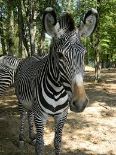
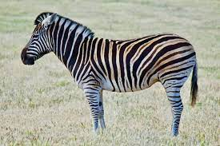
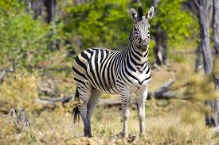
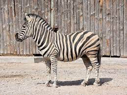

| Numele Speciei | Locatie | Populatie | Poza |
|---|---|---|---|
| Zebra de stepa | sudul Africii | 2,000 |  |
| Zebra de campie | estul si sudul Africii | 500,000 |  |
| Zebra de munte | Africa de Sud | 9,000 |  |
| Zebra de Chapman | sudul si sud-vestul Africii | 500,000 |  |
Mamifer africane rapide din genul Equus, asemănător calului și având semne generale distinctive de dungi albe și negre sau maro care alternează.